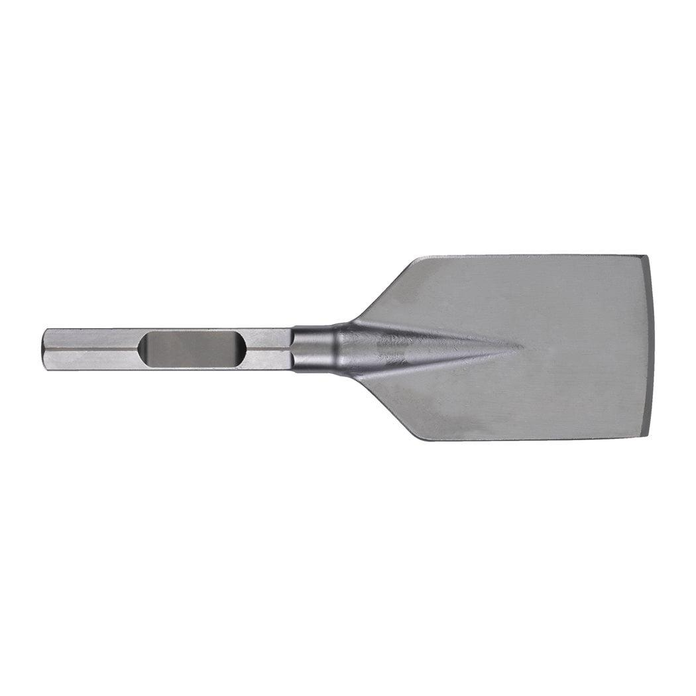
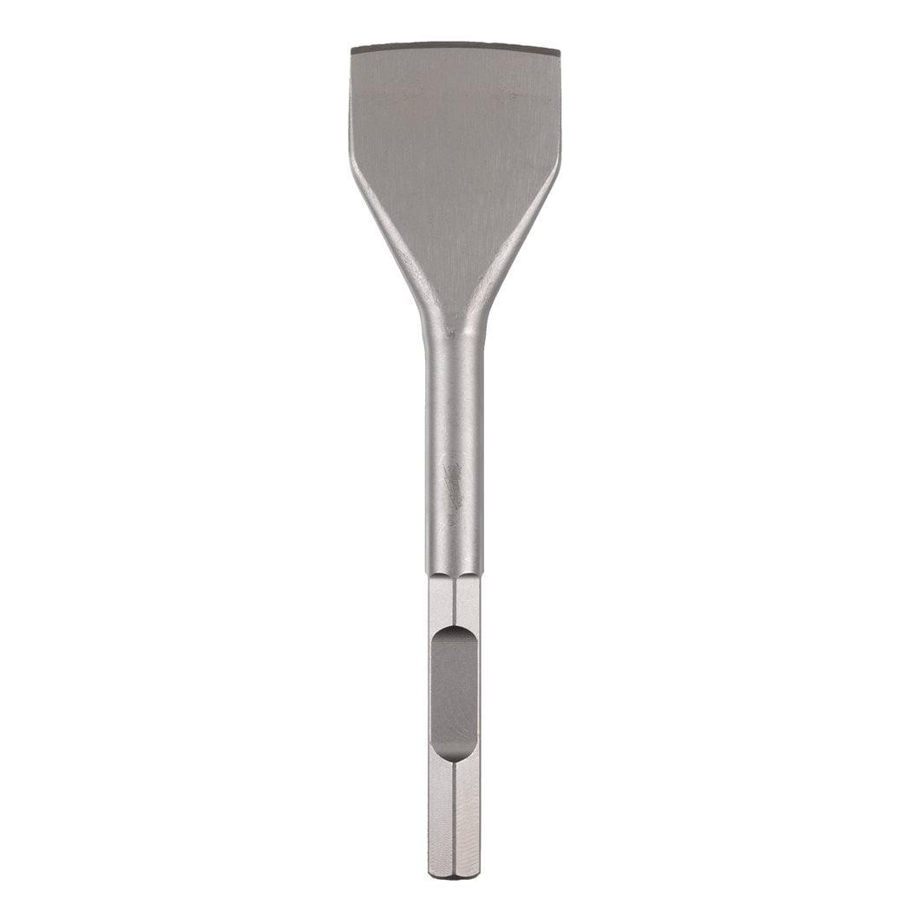

<h1>Milwaukee | 28MM K-HEX ASPHALT CHISEL 115 X 440MM</h1><p>4932479222</p><div style="display:flex;flex-wrap:wrap;gap:8px"></div><h4>Features</h4><ul><li>For cutting into asphalt in road construction and hard soil.</li></ul><h4>Information</h4><table><tr><td>Blade width (mm)</td><td>115</td></tr><tr><td>Pack quantity</td><td>1</td></tr><tr><td>Shank reception</td><td>28 mm K-Hex</td></tr><tr><td>Total length (mm)</td><td>440</td></tr></table>